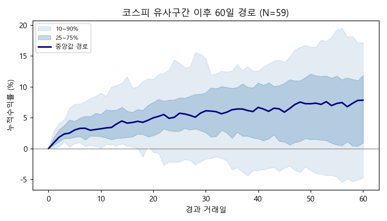
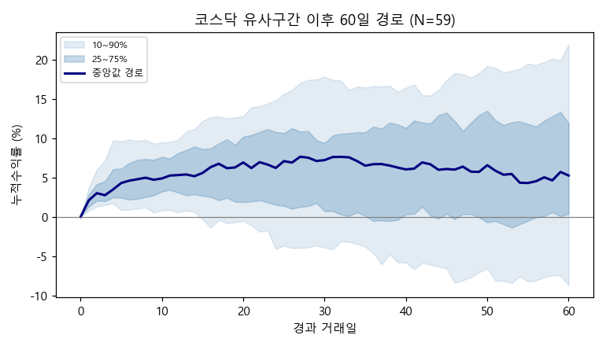

기준일: 2020-03-20 | 분석 표본: 과거 20년 일봉 + 투자자 수급
모든 통계는 기준일 이전 데이터만 사용(Look-ahead 차단). AI 주관이 아니라 과거 유사 사례의 실제 결과를 근거로 한다.
████████████████░░░░████████████████░░░░Forward Return 분포 (유사 사례 기준)
| 구간 | N | 평균 | 중앙값 | 상승확률 | +5%↑ | -5%↓ | 하위10% | 상위10% |
|---|---|---|---|---|---|---|---|---|
| D+1 | 60 | +1.22% | +0.93% | 95% | 7% | 2% | +0.1% | +2.8% |
| D+3 | 60 | +2.65% | +2.36% | 97% | 10% | 0% | +1.1% | +4.9% |
| D+5 | 60 | +3.45% | +3.06% | 97% | 20% | 0% | +0.8% | +7.2% |
| D+10 | 60 | +3.88% | +3.28% | 92% | 30% | 0% | +0.1% | +9.0% |
| D+20 | 60 | +5.07% | +4.89% | 87% | 48% | 5% | -0.8% | +10.9% |
| D+60 | 59 | +6.21% | +7.82% | 76% | 61% | 10% | -4.7% | +17.1% |
| D+120 | 58 | +8.07% | +5.93% | 74% | 53% | 17% | -7.8% | +28.1% |
현재와 가장 유사했던 과거 Top 15
| 순위 | 유사날짜 | 거리 |
|---|---|---|
| 1 | 2008-10-23 | 6.19 |
| 2 | 2011-08-10 | 8.06 |
| 3 | 2007-08-17 | 9.58 |
| 4 | 2008-01-22 | 9.83 |
| 5 | 2009-03-02 | 10.93 |
| 6 | 2006-06-13 | 11.03 |
| 7 | 2008-07-09 | 11.16 |
| 8 | 2018-10-29 | 11.19 |
| 9 | 2011-09-26 | 11.39 |
| 10 | 2007-11-23 | 11.41 |
| 11 | 2008-11-20 | 12.08 |
| 12 | 2008-09-01 | 12.50 |
| 13 | 2012-05-18 | 12.56 |
| 14 | 2015-08-24 | 12.83 |
| 15 | 2010-05-25 | 13.25 |
상승/하락을 가른 변수 (상승 52 vs 하락 8)
| Feature | 상승사례 평균 | 하락사례 평균 | 표준화차이 |
|---|---|---|---|
| inst_z20 | 0.58 | -0.57 | +0.93 |
| foreign_z20 | -0.97 | -0.23 | -0.65 |
| rsi14 | 31.17 | 34.94 | -0.51 |
| vol_ratio | 0.98 | 0.91 | +0.41 |
| macd_hist_n | -0.63 | -0.76 | +0.28 |
| vol20 | 20.02 | 23.11 | -0.27 |
Forward Return 분포 (유사 사례 기준)
| 구간 | N | 평균 | 중앙값 | 상승확률 | +5%↑ | -5%↓ | 하위10% | 상위10% |
|---|---|---|---|---|---|---|---|---|
| D+1 | 60 | +2.30% | +2.11% | 98% | 8% | 0% | +0.8% | +3.6% |
| D+3 | 60 | +3.57% | +2.78% | 98% | 23% | 0% | +1.5% | +7.1% |
| D+5 | 60 | +4.76% | +4.37% | 93% | 37% | 0% | +0.9% | +9.6% |
| D+10 | 60 | +4.84% | +4.93% | 95% | 47% | 2% | +0.8% | +9.5% |
| D+20 | 60 | +6.26% | +6.72% | 85% | 60% | 3% | -1.4% | +12.7% |
| D+60 | 59 | +6.73% | +5.28% | 76% | 51% | 15% | -8.7% | +22.0% |
| D+120 | 58 | +7.85% | +5.86% | 62% | 52% | 22% | -14.3% | +31.1% |
현재와 가장 유사했던 과거 Top 15
| 순위 | 유사날짜 | 거리 |
|---|---|---|
| 1 | 2008-10-13 | 6.19 |
| 2 | 2018-10-29 | 8.03 |
| 3 | 2008-09-02 | 8.13 |
| 4 | 2015-08-24 | 8.20 |
| 5 | 2019-08-06 | 8.25 |
| 6 | 2007-08-17 | 8.44 |
| 7 | 2011-08-09 | 8.81 |
| 8 | 2006-06-08 | 8.86 |
| 9 | 2006-01-23 | 9.23 |
| 10 | 2011-09-26 | 9.27 |
| 11 | 2008-07-08 | 9.68 |
| 12 | 2010-05-25 | 9.86 |
| 13 | 2008-01-23 | 10.32 |
| 14 | 2013-06-25 | 10.42 |
| 15 | 2006-10-09 | 11.19 |
상승/하락을 가른 변수 (상승 51 vs 하락 9)
| Feature | 상승사례 평균 | 하락사례 평균 | 표준화차이 |
|---|---|---|---|
| ret5 | -7.61 | -5.93 | -0.41 |
| inst_z20 | 0.12 | -0.33 | +0.41 |
| vol20 | 25.64 | 22.02 | +0.30 |
| disp20 | 92.35 | 93.40 | -0.27 |
| foreign_z20 | -0.47 | -0.70 | +0.19 |
| mdd120 | -17.33 | -15.59 | -0.19 |
종합: 두 시장을 합산한 권장 주식비중은 82%입니다. 이는 방향(상승확률)·기대수익·하방위험·표본 신뢰도를 분리 계산한 뒤 위험조정 노출로 산출한 값이며, 신뢰도가 낮을수록 중립(50%)에 가깝게 수축됩니다.
*본 리포트는 과거 데이터 기반 통계이며 미래 수익을 보장하지 않습니다. 표본 수(N)와 신뢰도를 반드시 함께 확인하세요.*

